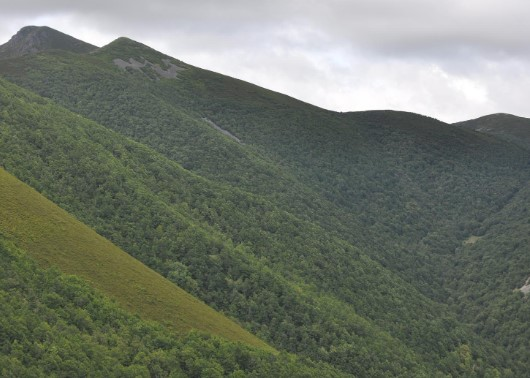
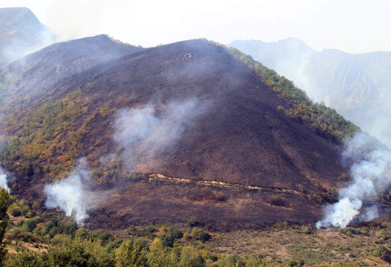

Por ser un territorio límite, el suelo, la flora y la fauna de Ancares son muy profusos, variados y característicos.
El suelo está compuesto por una abundancia de rocas, pizarras, granitos y areniscas que finalmente determinan un grado de acidez que imprime carácter a la flora, la cual resulta de especial interés y en la que predominan los brezales, que cubren gran parte de las laderas de solano del lado oriental. Son abundantes también los castaños y las "carballeiras", tan propias del interior de Galicia y de las que aún podemos disfrutar en Ancares.
En cualquier lugar nos podremos encontrar robles centenarios que nos sorprenderán, al igual que las abundantes colonias de acebos, se cuyo fruto se alimenta el urogallo, una especie protegida y emblemática de Ancares. A ellos se unen castaños y nogales. El brezo y los arándanos, con los que se elabora un riquísimo licor, son especies especialmente abundantes entre las bayas más nobles.
También es una zona rica en castaños los cuales antiguamente eran fruto de una de las principales actividades económicas de la zona como la recogida de castañas.
Entre los arbustos y hierbas: brezos, escobas y piornos, o genciana, entre otras. Son abundantes los pastizales de alta montaña que sirven de sustento al ganado en la época estival.
En la siguiente imagen se puede apreciar la densidad de los bosques que rodean al valle, compuestos fundamentalmente por robles, castaños, o acebos.

En cualquier caso, como en otras regiones de España, y sobretodo en la zona de Galicia y León, los incendios forestales, en su mayoría intencionados, no son una excepción. Al tratarse de madera vieja, la combustión es muy rápida,
y con, por suerte, poca frecuencia en los útlimos años, han provocado incendios de gran magnitud con el desastre ecológico que conlleva.
En la imagen de la derecha se puede apreciar el efecto devastador del último gran incendio de la zona, en Septiembre de 2011.

Por útlimo, se puede ver en este vídeo con una canción que dedico el grupo gallego Luar na Lubre a esta región, una galería de imágenes con la riqueza de la fauna y construcciones mas características.